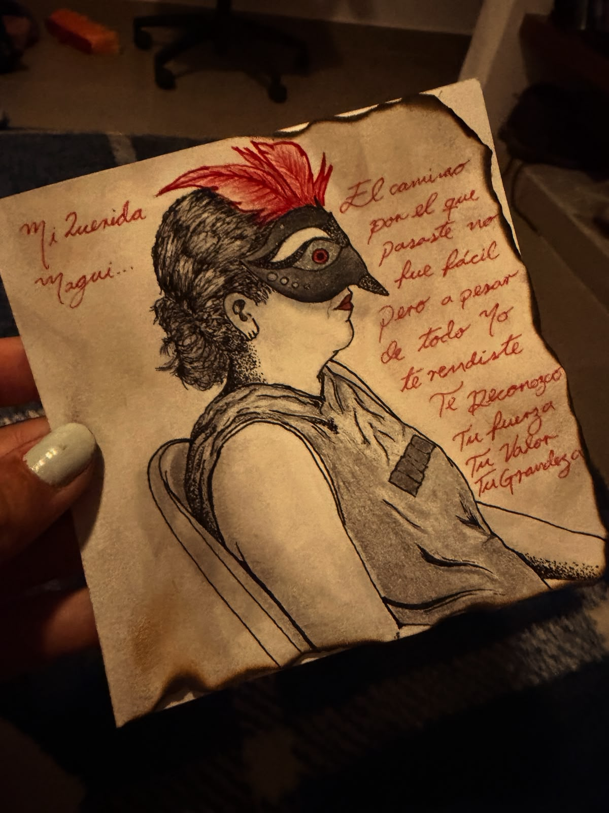
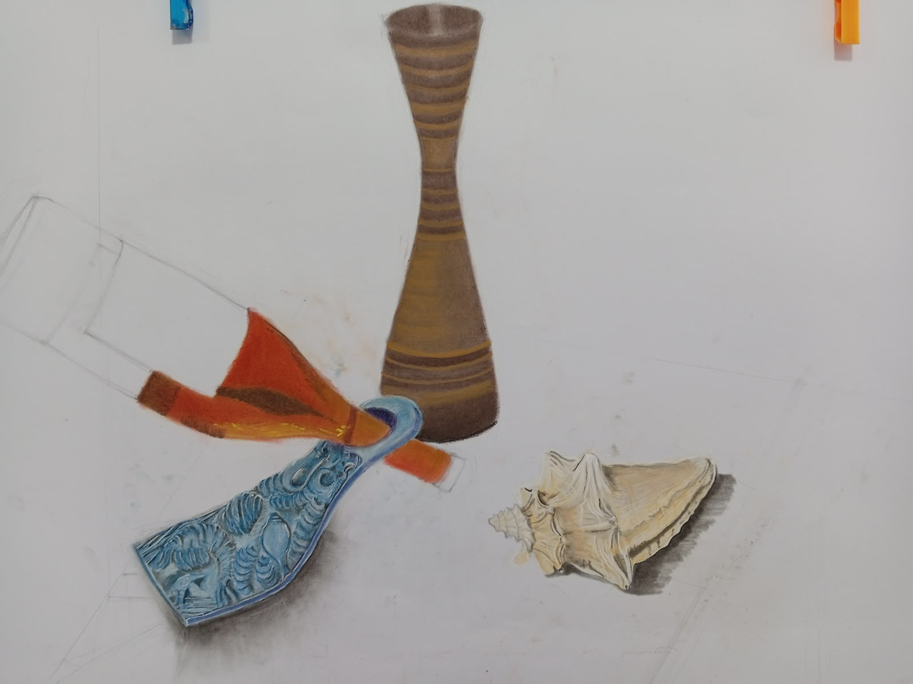
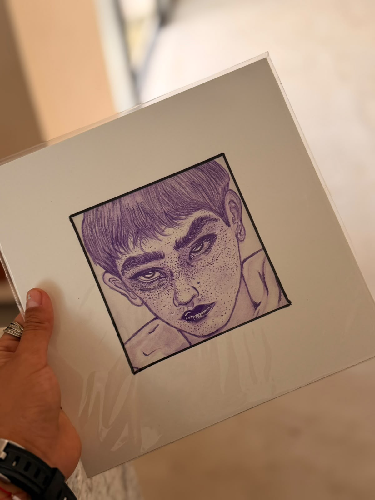
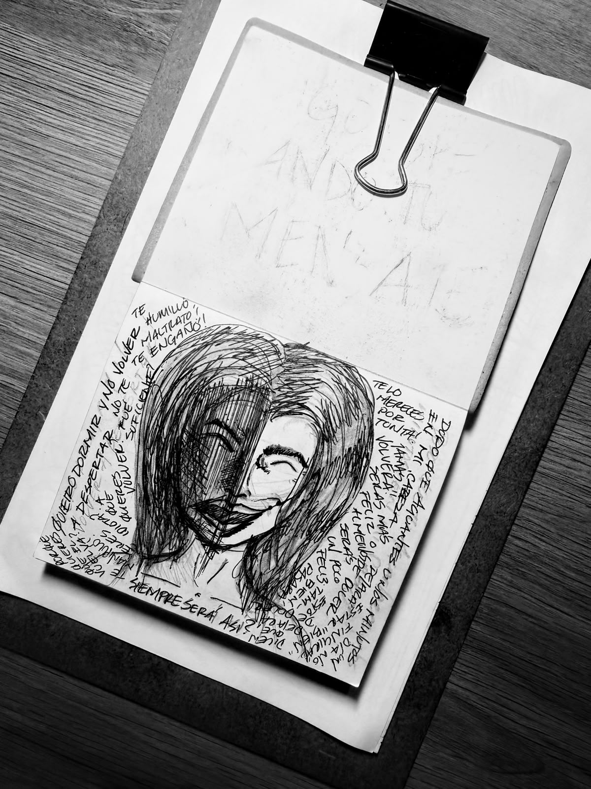
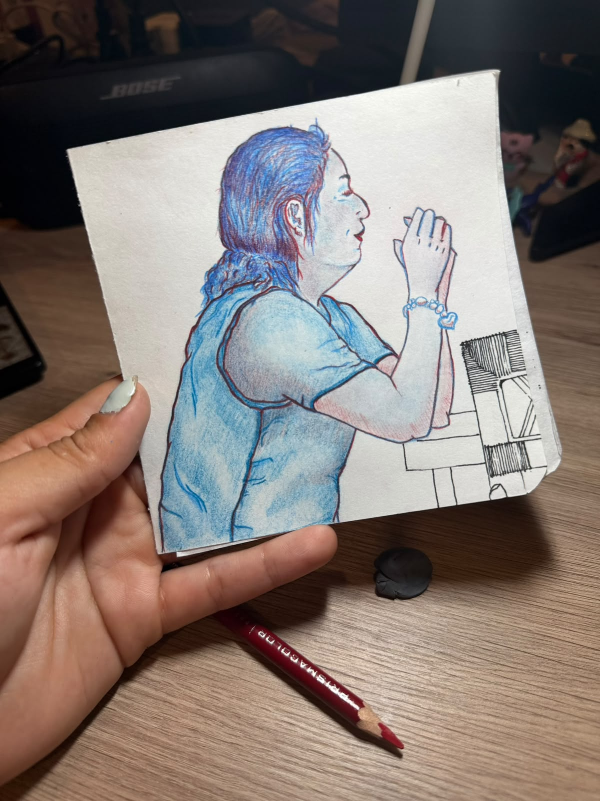

Galería de Obras
Filtra la colección por técnica plástica. Cada pieza está disponible para adquisición directa con la artista.
Fachada Montejo
LápizEstudio a lápiz de la arquitectura neoclásica con achurados de alta densidad sobre papel de algodón.
Penumbra y Mirada
CarboncilloExploración de chiaroscuro y textura de piel utilizando carbón vegetal sobre tonalidad gris neutro.
Existencia rota
Lápiz & TintaPieza utilitaria única a mano con pigmentos minerales y remate de hilo artesanal verde militar.

LibretasBitácora Ósmosis
Acrílico sobre TapaEncuadernación copta hecha a mano. Portada pintada en acrílico tono azul marino y vino con hoja de oro.
Luz Velada
Lápiz de colorEstudio de tez suave y gradientes orgánicos mezclando gises secos y lápices de color terrosos.

Bodegón
RetratoRetrato en tinta
TintaRetrato de trazos detallados en tinta violeta, con atención a la expresión y las sombras.

RetratoBoceto narrado
TintaRetrato monocromático de trazos gestuales, acompañado por escritura y anotaciones dibujadas.

RetratoDoble tinta
TintaRetrato de perfil en dos tonos, acompañado de trazos geométricos y detalles gráficos.